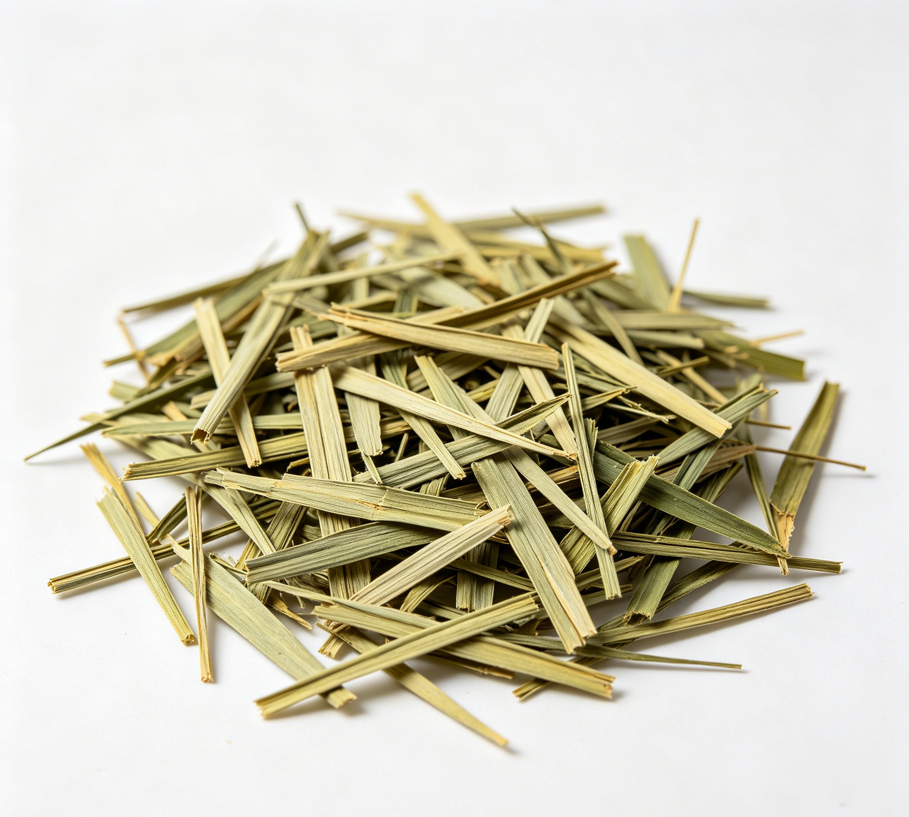

📋 基本信息
中文名淡竹叶
拉丁名Lophatherum gracile Brongn.
英文名Lophatheri Herba
产地科属：禾本科（Poaceae，即Gramineae）淡竹叶属（Lophatherum），拉丁学名Lophatherum gracile Brongn.。生态环境：生于山坡、林下及阴湿处。主产地：浙江、江苏、湖南、湖北、广东；安徽、江西、四川、福建、河南、广西、贵州、云南、台湾等地亦产。【《中华本草》及香港浸会大学药用植物图像数据库】
性状本品长25～75cm。茎呈圆柱形，有节，表面淡黄绿色，断面中空。叶鞘开裂。叶片披针形，有的皱缩卷曲，长5～20cm，宽1～3.5cm；表面浅绿色或黄绿色。叶脉平行，具横行小脉，形成长方形的网格状，下表面尤为明显。体轻，质柔韧。气微，味淡。【《中国药典》2020年版一部】
用法用量6～10g。【《中国药典》2020年版一部】
贮藏置干燥处。【《中国药典》2020年版一部】
☯ 传统属性
四气寒
五味甘、淡
归经心、胃、小肠经
功能主治清热泻火，除烦止渴，利尿通淋。用于热病烦渴，小便短赤涩痛，口舌生疮。【《中国药典》2020年版一部】
禁忌症无实火、湿热者慎服；体虚有寒者禁服。【《中华本草》及中药学工具书】
毒性常规剂量（6～10g）安全性好，毒性极低。性寒，长期或过量饮用可损伤脾阳，出现食欲减退、胃腹冷痛、大便稀溏等；体虚有寒者服用可加重畏寒肢冷；利尿作用或可加重电解质流失，大量久服者注意补充水分与电解质。个别报道对其中成分过敏者出现皮疹，罕见。
适宜体质阴虚质、湿热质
适宜证型阴虚证、肺阴虚证、胃阴虚证、热证
🔬 现代研究
主要成分淡竹叶含三萜类化合物，如芦竹素（arundoin）、白茅素（cylindrin）、蒲公英赛醇（taraxerol）及甾体类如β-谷甾醇、豆甾醇、菜油甾醇等；黄酮类以碳苷黄酮为特征，包括荭草苷、异荭草苷、牡荆素、异牡荆素等；另含多糖、氨基酸、酚酸类（绿原酸等）及挥发成分。【《中华本草》及公开成分研究文献】
药理作用①解热作用：淡竹叶水浸膏对酵母所致大鼠发热及大肠杆菌所致猫、家兔发热均有解热作用，解热有效成分溶于水及稀盐酸；②利尿作用：利尿作用较弱，但能明显增加尿中氯化钠排出量；③抑菌作用：水煎剂体外对金黄色葡萄球菌、溶血性链球菌等有抑制作用；④抗氧化、保肝：所含黄酮碳苷及多糖具清除自由基、保护肝细胞作用；⑤另有心肌保护、抗炎、抗病原微生物、抗肿瘤辅助活性等报道。【《中华本草》及公开科研文献综述】
食疗功效淡竹叶甘淡渗利、性寒清热，食疗取清心除烦、利尿通淋、生津止渴之效，是夏季传统凉茶原料。《本草纲目》谓其'去烦热，利小便，清心'。作为食药物质，适合暑热季节泡水代茶，用于心烦口渴、口疮尿赤等'上火'表现的日常调理；与竹叶心、灯心草、白茅根配伍为民间常用清暑利尿组合。性味平和清淡，清热而不甚伤正，但终属寒凉，虚寒体质不宜。
食养禁忌
🏭 产品形态与潜在功能
推荐形态
代茶饮提取物袋泡茶
潜在功能